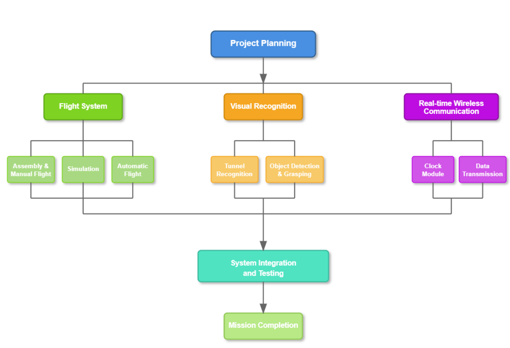
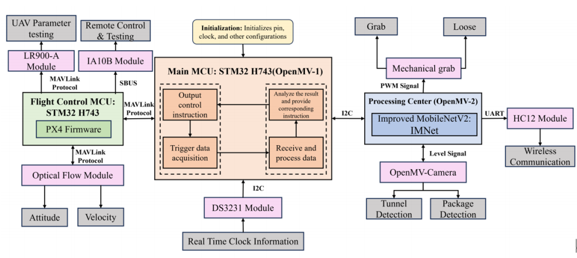

视觉引导自主抓取无人机系统
角色：组长 / 飞控逻辑设计 ｜ 时间：2025.03 - 2025.06 ｜ 团队规模：6人
项目背景
面向复杂环境下无人机“看得见但抓不准”的问题， 设计一套具备视觉感知、实时决策与稳定执行能力的自主抓取系统， 目标是提升任务连续性与抓取成功率。
技术方案
1) 完成无人机硬件选型与系统级集成，支持全任务流程（起飞、导航、降落）。
2) 基于 Mavlink 建立飞控与 OpenMV 高效通信链路，保障视觉数据与飞行指令实时同步。
3) 设计视觉反馈驱动的动态位姿修正策略，提高空中末端执行器的抓取稳定性。
4) 构建闭环控制流程：目标识别 -> 接近控制 -> 抓取执行 -> 复位返航。
个人贡献
• 负责系统架构设计与任务分解，推进团队协作与开发节奏。
• 主导飞控逻辑与通信协议联调，解决视觉-飞控协同中的时序问题。
• 组织测试与参数迭代，优化抓取稳定性与任务完成率。
成果展示



演示视频
若视频较大，建议用 Bilibili/YouTube 嵌入，减小仓库体积、加载更快。
项目成果
• 完成端到端自主演示，验证了从识别到抓取的完整能力链路。
• 在复杂场景下实现视觉引导抓取，体现系统级工程落地能力。
• 沉淀了可复用的“视觉感知 + 飞控通信 + 闭环控制”开发流程。
项目报告 PDF
《Final Report_Team12_BS Team》可作为项目立项与总结的正式文档。